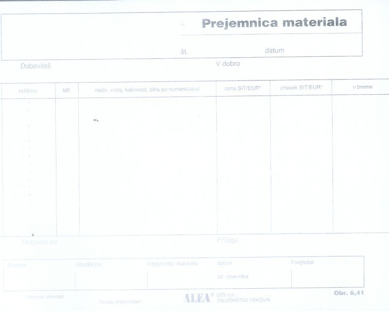

|
Naloga delovne dokumentacije je natanèen opis dogodka, procesa ali predmeta obravnave. Delovni dokumenti vsebujejo vse potrebne podatke, ki enolièno opišejo dogodek: datum, èas, kraj, odgovorne osebe, predmet obravnave. Ko uèitelj prejme nove kartuše za tiskalnik, lahko to potrdi tehniški službi ZUIM, ki je zadolžena za nabavo materiala. To stori na posebnem obrazcu. Ta obrazec služi potrditvi o prejemu novega (potrošnega) materiala. Ravno tako lahko potrebuje uèitelj nek material ali sredstva, s katerimi razpolagajo v neki drugi delovni enoti ZUIM. Recimo, da potrebuje uèitelj biologije na srednji šoli (SŠ) za nekaj šolskih ur èloveški skelet. Ta se nahaja na osnovni šoli (OŠ). Uèitelj SŠ zaprosi kolegico z OŠ, da mu skelet za nekaj dni posodi. Ko uèitelj želeni skelet prejme, napiše potrdilo, da je zaprošeni rekvizit resnièno prejel. Oglejmo si nekaj podatkov v splošni prejemnici: 1. Dobavitelj - to je organizacija ali organizacijska enota, ki oskrbi prejemnika z želenim materialom. 2. V dobro - to je naslov prejemnika. 3. Kolièina - v obliki MERSKEGA ŠTEVILA podana kolièina želenega materiala, denimo 6 (šest). 4. ME - merska enota želenega materiala, denimo kartuše ali kosi. 5. Naziv, vrsta, kakovost, šifra po nomenklaturi - naziv prejetega materiala. Najpogosteje je skladišèe tista organizacijska enota, ki izdaja material ostalim enotam.  Slika 1: Splošni obrazec za prejemnico. 1. Vprašanja za usmerjanje pozornosti in usvajanje novih besed: 1. Katere podatke mora vsebovati delovna dokumentacija? 2. Kako se imenuje obrazec, s pomoèjo katerega organizacija potrdi, da je prejela material, ki ga potrebuje za doseganje svojih ciljev? 3. Naštej podatke, ki jih vsebuje splošna prejemnica. To so rubrike ali stolpci v obrazcu. 4. Kako se glasi naziv prejetega materiala v primeru iz besedila? 5. Koliko znaša mersko število v primeru iz besedila? 6. Koliko znaša merska enota v primeru iz besedila? 7. Kako je oznaèena merska enota v primeru iz besedila? 8. Katera organizacijska enota najpogosteje izdaja material ostalim organizacijskim enotam? 9. Na sliki te uène enote poskusi ugotoviti, kdo izdaja obrazce za prejemnice materiala? 10. Na sliki te uène enote poskusi ugotoviti številko oziroma oznako obrazca prejemnice materiala? 2. Zapiši od ene do pet kljuènih besed, ki povzemajo vsebino te uène enote. 3. Vprašanja za razmislek, ponavljanje in povezovanje z lastno izkušnjo: 4. Domaèa naloga: V enem do petih stavkih zapiši, kaj ti je v tej uèni enoti najbolj ostalo v spominu. |